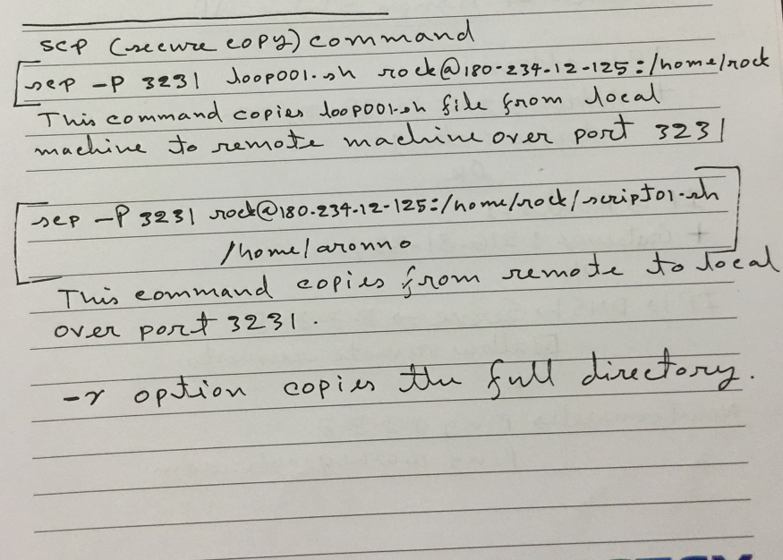

background-color:#CCC;This tutorials came from https://www.tutorialspoint.com/unix/unix-special-variables.htm .
echo $? on command prompt to show last command exit status. Generally value 0 indicates that the command executed successfully. We can observe a script in
#!/usr/bin/env bash
DEV=$(iw dev | awk '/Interface/ {interf=$2} END {print interf}')
DHCL_PIDFILE=/var/run/dhclient-$DEV.pid
WPA_PIDFILE=/var/run/wpa_supplicant-$DEV.pid
if [[ -f $DHCL_PIDFILE ]] && kill -9 $(cat $DHCL_PIDFILE)
then
dhclient -v -r $DEV
echo "IP address released"
fi
if [[ -f $WPA_PIDFILE ]] && kill -9 $(cat $WPA_PIDFILE)
then
echo "WPA supplicant killed"
fi
killall wpa_supplicant
echo "wpa_supplicant killed :)"
ifconfig -v $DEV down
sleep 1
ifconfig -v $DEV up
echo "$DEV interface is up again"
iwconfig $DEV essid 'TP-LINK_CCCEEA' channel 6
echo "starting wpa_supplicant.."
sleep 2
wpa_supplicant -B -dd -i$DEV -P$WPA_PIDFILE -c/etc/wpa_supplicant/wifi.conf
sleep 2
echo "getting IP address.."
dhclient -v -pf $DHCL_PIDFILE $DEV
https://www.tutorialspoint.com/unix/unix-basic-operators.htm Logical operations:
It is very important to understand that all the conditional expressions should be inside square braces with spaces around them, for example
[ $a == $b ] is correct whereas, [$a==$b] is incorrect.Relational Operators
Bourne Shell supports the following relational operators that are specific to numeric values. These operators do not work for string values unless their value is numeric.It is very important to understand that all the conditional expressions should be placed inside square braces with spaces around them. For example,
[ $a <= $b ] is correct whereas, [$a <= $b] is incorrect.
Boolean Operators
Code Link
#!/bin/sh a=10 b=20 if [ $a -eq $b ] then echo "$a -eq $b : a is equal to b" else echo "$a -eq $b: a is not equal to b" fi if [ $a -ne $b ] then echo "$a -ne $b: a is not equal to b" else echo "$a -ne $b : a is equal to b" fi if [ $a -gt $b ] then echo "$a -gt $b: a is greater than b" else echo "$a -gt $b: a is not greater than b" fi if [ $a -lt $b ] then echo "$a -lt $b: a is less than b" else echo "$a -lt $b: a is not less than b" fi if [ $a -ge $b ] then echo "$a -ge $b: a is greater or equal to b" else echo "$a -ge $b: a is not greater or equal to b" fi if [ $a -le $b ] then echo "$a -le $b: a is less or equal to b" else echo "$a -le $b: a is not less or equal to b" fi
String Operations
Code Link
#!/bin/sh a="abc" b="efg" if [ $a = $b ] then echo "$a = $b : a is equal to b" else echo "$a = $b: a is not equal to b" fi if [ $a != $b ] then echo "$a != $b : a is not equal to b" else echo "$a != $b: a is equal to b" fi if [ -z $a ] then echo "-z $a : string length is zero" else echo "-z $a : string length is not zero" fi if [ -n $a ] then echo "-n $a : string length is not zero" else echo "-n $a : string length is zero" fi if [ $a ] then echo "$a : string is not empty" else echo "$a : string is empty" fi
Observe the tutorials point web page. The left list is showing more tutorials and examples.
It is stated that bash does not have the ability to do mathmetical operations. So it can perform math by
File Folder Directory related commands
Following script can take one parameter as a folder name and detect if the folder exist??#!/bin/sh file="/var/www/tutorialspoint/unix/test.sh" if [ -r $file ] then echo "File has read access" els e echo "File does not have read access" fi if [ -w $file ] then echo "File has write permission" else echo "File does not have write permission" fi if [ -x $file ] then echo "File has execute permission" else echo "File does not have execute permission" fi if [ -f $file ] then echo "File is an ordinary file" else echo "This is sepcial file" fi if [ -d $file ] then echo "File is a directory" else echo "This is not a directory" fi if [ -s $file ] then echo "File size is zero" else echo "File size is not zero" fi if [ -e $file ] then echo "File exists" else echo "File does not exist" fi
loops
Script Example Page::https://www.tutorialspoint.com/unix/unix-shell-loops.htm
Observe that
echo -n option prevents new line character at the end. Why the variables are inside "" double quotes??? Also observe that `expr $b - 1` is inside single quote which is shift-tiled on keyboard.
Spaces are sensitive issues for bash scripts. When assigning value to a variable, take care about spaces between variable, value and = equal sign.
a=`expr $a - 1` would be correct spacing.
scp (secure copy) command
Radxa Rock service stop disable command
My Radxa Rock RK3188 linux image uses lightdm as desktop manager. We can stop lightdm by command service lightdm stop .
Finally we disable the lightdm service parmanently. We did applied
sudo systemctl disable lightdm.service command, which internally run a command /usr/sbin/update-rc.d lightdm disable that shows a message like Removed symlink /etc/systemd/system/display-manager.service .
service systemctl list services
https://www.digitalocean.com/community/tutorials/how-to-use-systemctl-to-manage-systemd-services-and-units
List only services :
systemctl list-units --type=serice or systemctl list-units --type=service > services.txt then I applied scp command to get the file from remote machine as sudo scp -P 3231 rock@180.234.12.125:/home/rock/services.txt /home/aronno .
rsync
Before rsync the remote directory has to besudo chmode 777 remote_dir . sudo rsync -rvz -e 'ssh -p 3231' --progress PROJECTS/ rock@180.234.12.125:/home/rock/PROJECTS/rsync -rvz -e 'ssh -p 2222' --progress --remove-sent-files ./dir user@host:/pathrsync -azP -e "ssh -p 2121" /path/to/files/source user@remoteip:/path/to/files/destination
rsync command syncronizes source to destination folder.
wget all files with skip existing
newer only wget linkstackoverflow link
First cd to destination directory. Then:
sudo wget -N -r --no-parent ftp://ftp.cadsoft.de/eagle/userfiles/libraries/
This command will download all files recursively from the specified URL location folder. If same file exists in local location then it does not download those files.
I did create a text file to store dropbox and my own server folder locations for synchronizations as follows:
src001 source001/file1.txt dest001/file1.txt src002 source002/file2.xzf dest002/file2.xzf src003 rock@180.234.12.125 rock@180.234.12.125:/var/www/html....
Initially I want a script that could takes a parameter as a key for which pair of location I wanted to sync. Suppose "src001" as a parameter for the script. So the script can takes source and dest location for later use. Following simple code can help to do such a job:
#!/bin/bash
echo ""
awk "/$2/ {print \$3}" $1
Command example using this script:
./script007.sh links.list rockOutput:
rock@180.234.12.125:/var/www/html/droptest/linux/script/script001.sh
Observe the escape character before $ sign to pass $3 for awk command. This awk command should be like follows:
awk '/rock/ {print $3}' links.listwhere the pattern is in between double back slash as
/rock/ and the operations are in between single quotes. But in the bash script we did use double quotes, because bash variable does not work in single quote. So we used double quote and passed a variable to awk by using escape character. Simply apply the command on command prompt that applies double quote with awk sub command:awk "/rock/ {print \$3}" links.listWithout "\"(back slash) before "$"(dollar sign) the command acted different.